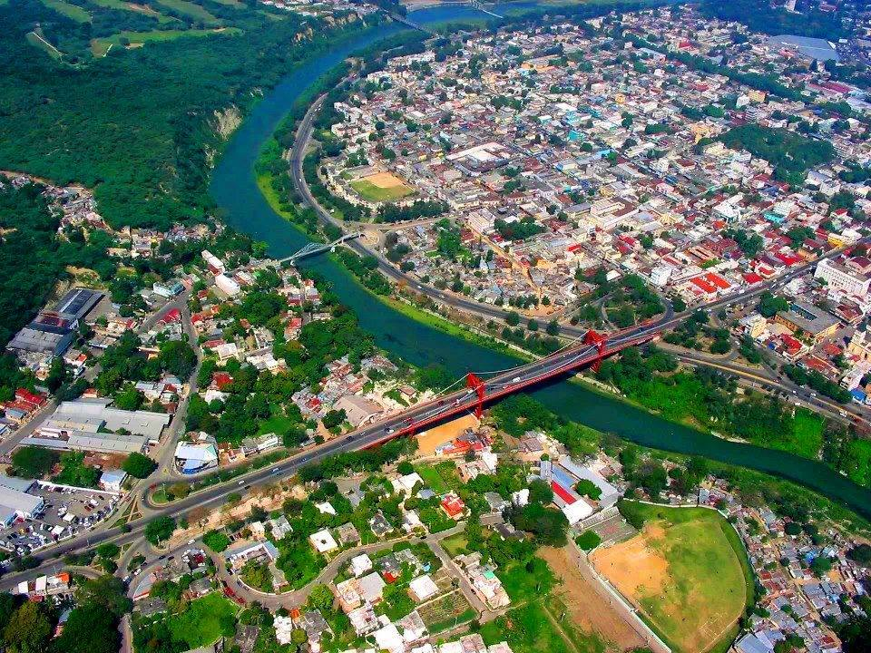

Santiago explore
La capital de la región del cibao llena de belleza de extremo a extremo la ciudad corazón alberga monumentos de gran importancia y hermosura. Esta ciudad es ideal para personas que busquen actividad urbana y rural en la parte norte de la República Dominicana.